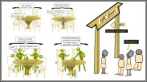

Scheduler Fundamentals
Last updated on 2026-04-14 | Edit this page
Overview
Questions
- What is a scheduler and why does a cluster need one?
- How do I launch a program to run on a compute node in the cluster?
- How do I capture the output of a program that is run on a node in the cluster?
Objectives
- Submit a simple script to the cluster.
- Monitor the execution of jobs using command line tools.
- Inspect the output and error files of your jobs.
- Find the right place to put large datasets on the cluster.
Job Scheduler
An HPC system might have thousands of nodes and thousands of users. How do we decide who gets what and when? How do we ensure that a task is run with the resources it needs? This job is handled by a special piece of software called the scheduler. On an HPC system, the scheduler manages which jobs run where and when.
The following illustration compares these tasks of a job scheduler to a waiter in a restaurant. If you can relate to an instance where you had to wait for a while in a queue to get in to a popular restaurant, then you may now understand why sometimes your job do not start instantly as in your laptop.

The scheduler used in this lesson is Slurm. Although Slurm is not used everywhere, running jobs is quite similar regardless of what software is being used. The exact syntax might change, but the concepts remain the same.
Running a Batch Job
The most basic use of the scheduler is to run a command non-interactively. Any command (or series of commands) that you want to run on the cluster is called a job, and the process of using a scheduler to run the job is called batch job submission.
In this case, the job we want to run is a shell script – essentially a text file containing a list of UNIX commands to be executed in a sequential manner. Our shell script will have three parts:
- On the very first line, add
#!/bin/bash. The#!(pronounced “hash-bang” or “shebang”) tells the computer what program is meant to process the contents of this file. In this case, we are telling it that the commands that follow are written for the command-line shell (what we’ve been doing everything in so far). - Anywhere below the first line, we’ll add an
echocommand with a friendly greeting. When run, the shell script will print whatever comes afterechoin the terminal.-
echo -nwill print everything that follows, without ending the line by printing the new-line character.
-
- On the last line, we’ll invoke the
hostnamecommand, which will print the name of the machine the script is run on.
Creating Our Test Job
Run the script. Does it execute on the cluster or just our login node?
This script ran on the login node, but we want to take advantage of
the compute nodes: we need the scheduler to queue up
example-job.sh to run on a compute node.
To submit this task to the scheduler, we use the sbatch
command. This creates a job which will run the script
when dispatched to a compute node which the queuing system has
identified as being available to perform the work.
OUTPUT
Submitted batch job 7And that’s all we need to do to submit a job. Our work is done – now
the scheduler takes over and tries to run the job for us. While the job
is waiting to run, it goes into a list of jobs called the
queue. To check on our job’s status, we check the queue using
the command squeue -u yourUsername.
OUTPUT
JOBID PARTITION NAME USER ST TIME NODES NODELIST(REASON)
9 cpubase_b example- user01 R 0:05 1 node1We can see all the details of our job, most importantly that it is in
the R or RUNNING state. Sometimes our jobs
might need to wait in a queue (PENDING) or have an error
(E).
Where’s the Output?
On the login node, this script printed output to the terminal – but
now, when squeue shows the job has finished, nothing was
printed to the terminal.
Cluster job output is typically redirected to a file in the directory
you launched it from. Use ls to find and cat
to read the file.
Customising a Job
The job we just ran used all of the scheduler’s default options. In a real-world scenario, that’s probably not what we want. The default options represent a reasonable minimum. Chances are, we will need more cores, more memory, more time, among other special considerations. To get access to these resources we must customize our job script.
Comments in UNIX shell scripts (denoted by #) are
typically ignored, but there are exceptions. For instance the special
#! comment at the beginning of scripts specifies what
program should be used to run it (you’ll typically see
#!/bin/bash). Schedulers like Slurm also have a special
comment used to denote special scheduler-specific options. Though these
comments differ from scheduler to scheduler, Slurm’s special comment is
#SBATCH. Anything following the #SBATCH
comment is interpreted as an instruction to the scheduler.
Let’s illustrate this by example. By default, a job’s name is the
name of the script, but the -J option can be used to change
the name of a job. Add an option to the script:
Submit the job and monitor its status:
OUTPUT
JOBID PARTITION NAME USER ST TIME NODES NODELIST(REASON)
10 cpubase_b hello-wo user01 R 0:02 1 node1Fantastic, we’ve successfully changed the name of our job!
Resource Requests
What about more important changes, such as the number of cores and memory for our jobs? One thing that is absolutely critical when working on an HPC system is specifying the resources required to run a job. This allows the scheduler to find the right time and place to schedule our job. If you do not specify requirements (such as the amount of time you need), you will likely be stuck with your site’s default resources, which is probably not what you want.
The following are several key resource requests:
--ntasks=<ntasks>or-n <ntasks>: How many CPU cores does your job need, in total?--time <days-hours:minutes:seconds>or-t <days-hours:minutes:seconds>: How much real-world time (walltime) will your job take to run? The<days>part can be omitted.--mem=<megabytes>: How much memory on a node does your job need in megabytes? You can also specify gigabytes using by adding a little “g” afterwards (example:--mem=5g)--nodes=<nnodes>or-N <nnodes>: How many separate machines does your job need to run on? Note that if you setntasksto a number greater than what one machine can offer, Slurm will set this value automatically.
Note that just requesting these resources does not make your job run faster, nor does it necessarily mean that you will consume all of these resources. It only means that these are made available to you. Your job may end up using less memory, or less time, or fewer nodes than you have requested, and it will still run.
It’s best if your requests accurately reflect your job’s requirements. We’ll talk more about how to make sure that you’re using resources effectively in a later episode of this lesson.
Submitting Resource Requests
Modify our hostname script so that it runs for a minute,
then submit a job for it on the cluster.
Resource requests are typically binding. If you exceed them, your job will be killed. Let’s use wall time as an example. We will request 1 minute of wall time, and attempt to run a job for two minutes.
BASH
#!/bin/bash
#SBATCH -Jlong_job
#SBATCH -t 00:01 # timeout in HH:MM
echo "This script is running on ... "
sleep 240 # time in seconds
hostnameSubmit the job and wait for it to finish. Once it is has finished, check the log file.
OUTPUT
This script is running on ...
slurmstepd: error: *** JOB 12 ON node1 CANCELLED AT 2021-02-19T13:55:57
DUE TO TIME LIMIT ***Our job was killed for exceeding the amount of resources it requested. Although this appears harsh, this is actually a feature. Strict adherence to resource requests allows the scheduler to find the best possible place for your jobs. Even more importantly, it ensures that another user cannot use more resources than they’ve been given. If another user messes up and accidentally attempts to use all of the cores or memory on a node, Slurm will either restrain their job to the requested resources or kill the job outright. Other jobs on the node will be unaffected. This means that one user cannot mess up the experience of others, the only jobs affected by a mistake in scheduling will be their own.
Cancelling a Job
Sometimes we’ll make a mistake and need to cancel a job. This can be
done with the scancel command. Let’s submit a job and then
cancel it using its job number (remember to change the walltime so that
it runs long enough for you to cancel it before it is killed!).
OUTPUT
Submitted batch job 13
JOBID PARTITION NAME USER ST TIME NODES NODELIST(REASON)
13 cpubase_b long_job user01 R 0:02 1 node1Now cancel the job with its job number (printed in your terminal). A clean return of your command prompt indicates that the request to cancel the job was successful.
BASH
[yourUsername@login1 ~]$ scancel 38759
# It might take a minute for the job to disappear from the queue...
[yourUsername@login1 ~]$ squeue -u yourUsernameOUTPUT
JOBID PARTITION NAME USER ST TIME NODES NODELIST(REASON)Cancelling multiple jobs
We can also cancel all of our jobs at once using the -u
option. This will delete all jobs for a specific user (in this case,
yourself). Note that you can only delete your own jobs.
Try submitting multiple jobs and then cancelling them all.
Other Types of Jobs
Up to this point, we’ve focused on running jobs in batch mode.
Slurm also provides the ability to start an interactive
session.
There are very frequently tasks that need to be done interactively.
Creating an entire job script might be overkill, but the amount of
resources required is too much for a login node to handle. A good
example of this might be building a genome index for alignment with a
tool like HISAT2.
Fortunately, we can run these types of tasks as a one-off with
srun.
srun runs a single command on the cluster and then
exits. Let’s demonstrate this by running the hostname
command with srun. (We can cancel an srun job
with Ctrl-c.)
OUTPUT
smnode1srun accepts all of the same options as
sbatch. However, instead of specifying these in a script,
these options are specified on the command-line when starting a job. To
submit a job that uses 2 CPUs for instance, we could use the following
command:
OUTPUT
This job will use 2 CPUs.
This job will use 2 CPUs.Typically, the resulting shell environment will be the same as that
for sbatch.
Interactive jobs
Sometimes, you will need a lot of resources for interactive use.
Perhaps it’s our first time running an analysis or we are attempting to
debug something that went wrong with a previous job. Fortunately, Slurm
makes it easy to start an interactive job with srun:
You should be presented with a bash prompt. Note that the prompt will
likely change to reflect your new location, in this case the compute
node we are logged on. You can also verify this with
hostname.
Creating remote graphics
To see graphical output inside your jobs, you need to use X11
forwarding. To connect with this feature enabled, use the
-Y option when you login with the ssh command,
e.g., ssh -Y yourUsername@cluster.hpc-carpentry.org.
To demonstrate what happens when you create a graphics window on the
remote node, use the xeyes command. A relatively adorable
pair of eyes should pop up (press Ctrl-C to stop). If you
are using a Mac, you must have installed XQuartz (and restarted your
computer) for this to work.
If your cluster has the slurm-spank-x11
plugin installed, you can ensure X11 forwarding within interactive jobs
by using the --x11 option for srun with the
command srun --x11 --pty bash.
When you are done with the interactive job, type exit to
quit your session.
- The scheduler handles how compute resources are shared between users.
- A job is just a shell script.
- Request slightly more resources than you will need.